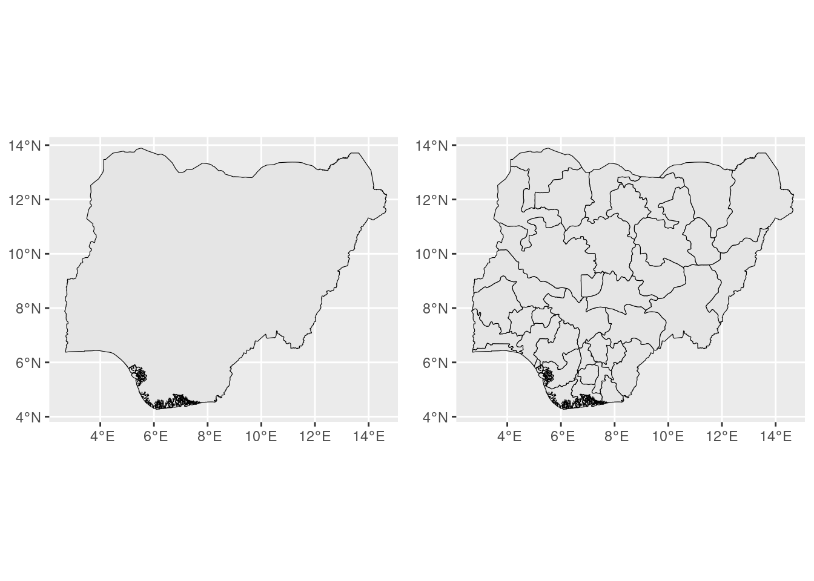
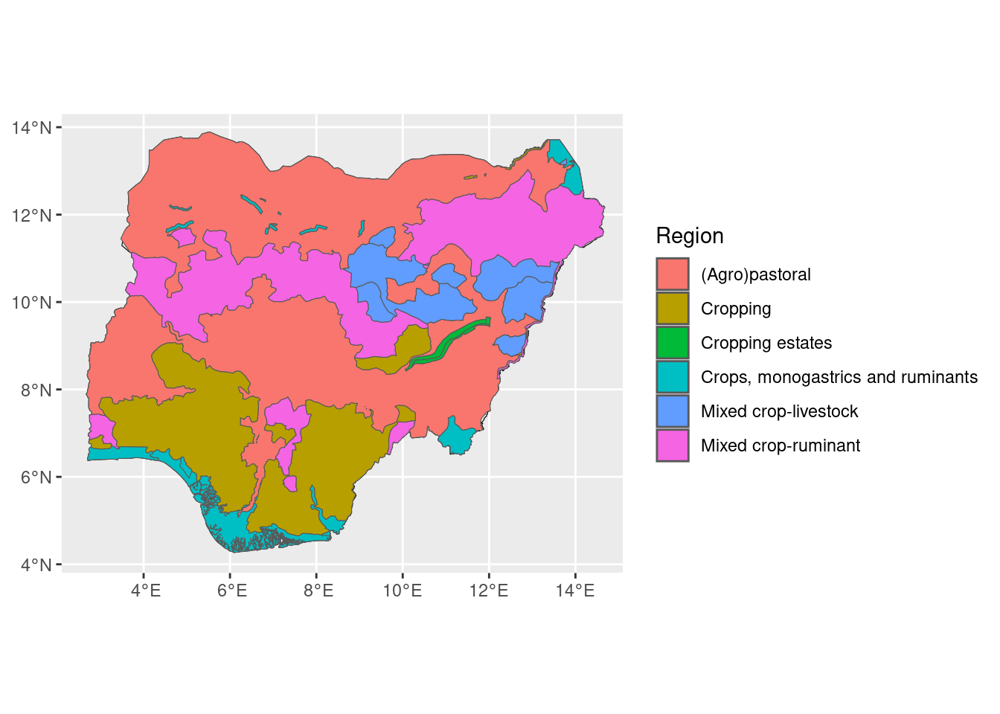

| Data | Description | Use | Year | Url | Reference |
|---|---|---|---|---|---|
| Administrative boundaries | Administrative boundaries for all countries and their sub-divisions | Extracting the study area | NA | https://gadm.org | |
| Ruminant systems aggregation zones | NA | ||||
| Land use | Location, extent, and patterns of different crop types | Allocation of dry matter to different land use categories | 2023 | Buchhorn et al. (2020) | |
| Above ground dry matter productivity | Vegetation's overall growth rate | 2023 | https://land.copernicus.eu/en/products/vegetation/dry-matter-productivity-v1-0-300m | Copernicus (2024) | |
| Crop type | Location, extent, and patterns of different crop types | Mapping the availability of crop residues | 2020 | https://mapspam.info | IFPRI (2024) |
| Phenolology | Indicates start/end of growing season | NA | |||
| Burned areas | Burnt scars | Indicates locations with burned scars | NA | https://land.copernicus.eu/en/products/vegetation/burnt-area-v3-1-daily-300m | |
| Protected areas | Marine and terrestrial protected areas | Indicates regions with grazing or cultivation restrictions | 2024 | https://www.protectedplanet.net/en/thematic-areas/wdpa?tab=WDPA | UNEP-WCMC and IUCN (2023) |
| Tree cover | Forest and non-forest treecover | Indicates the proportion of grassland and shrubland covered by trees | 2019 | ||
| Harvest index | Ratio of harvested product dry weight to total above-ground biomass dry weight at plant maturity | Indicated the amount of residue available as livestockfeed | NA | ILRI (2020) | |
| Feed quality | Nutritional quality of feed items | NA | https://feedsdatabase.ilri.org | ||
| Livestock population | Type and number of livestock | Indicates livestock population | 2020 | https://data.apps.fao.org/catalog//iso/9d1e149b-d63f-4213-978b-317a8eb42d02 | FAO (2024) |
Data download and collection
Introduction
This course is designed to guide participants through the key spatial and non-spatial data sources essential for assessing livestock feed balance. Understanding where to find reliable data is the foundation for accurate livestock feed balance modelling. Throughout the course, we will introduce participants to a variety of datasets. By the end of this course, you will have a comprehensive understanding of what data is needed for livestock feed balance assessments and, most importantly, where to source them.
Learning outcomes
By the end of this course, participants will be able to:
- Know what data is needed for livestock feed balance modelling
- Gather spatial data, import them into R and produce maps using scripts
- Perform several types of spatial analyses in R
- Plot and export maps with the results of these analyses
R and RStudio
If you plan to follow along with the R coding during the workshop, please ensure that you have the latest versions of R and RStudio installed on your computer.
First, you will need to download and install R. R can be downloaded at: https://cran.r-project.org.
Next you will need to download and install RStudio. RStudio can be downloaded at: https://rstudio.com/products/rstudio/download/#download.
Input data for ruminant feed balance modelling
Geospatial and non-geospatial data necessary for ruminant feed balance modelling are listed in below.
Setting the working directory
Create a new RStudio project and name it ruminant-feed-balance in a new folder named AU_IBAR. For the purpose of this workshop, we assign the folder AU_IBAR the variable name root.
root <- "~/AU_IBAR/ruminant-feed-balance"Administrative boundaries
We create a new folder under ruminant-feed-balance, name it AdminBound and assign it the name outdir. We can download administrative boundaries of world countries with the geodata package (Hijmans et al. 2023). Here we use geodata to download the administrative boundaries of Nigeria from GADM, and store the data in AdminBound folder. We convert it to a simple feature and assign it the name aoi.
library(geodata)
library(ggplot2)
library(cowplot)
outdir <- paste0(root, "/src/1Data-download/SpatialData/inputs/AdminBound"); dir.create(outdir, F, T)
# Level 0
aoi0 <- geodata::gadm(country = "NGA", level=0, path = paste0(outdir), version="latest") %>%
sf::st_as_sf()
# Level 1
aoi1 <- geodata::gadm(country = "NGA", level=1, path = paste0(outdir), version="latest") %>%
sf::st_as_sf()
p0 <- ggplot() +
geom_sf(data = aoi0, colour = "black", show.legend = F) +
coord_sf(xlim = c(2.1, 15.1), ylim = c(3.8, 14.3), expand = FALSE)
p1 <- ggplot() +
geom_sf(data = aoi1, colour = "black", show.legend = F) +
coord_sf(xlim = c(2.1, 15.1), ylim = c(3.8, 14.3), expand = FALSE)
plot_grid(p0, p1, labels = NULL)
Ruminant systems aggregation zones
We use FEWSNET livelihood zones, the most recent version is available on https://drive.google.com/file/d/1FwbhyjxjpuCFZ6hMcdQFIG4tdLoe9WV4/view?usp=sharing, and download the data.
library(googledrive)
library(sf)
outdir <- paste0(root, "/src/1Data-download/SpatialData/inputs/AggregationZones"); dir.create(outdir, F, T)
drive_deauth()
drive_user()
public_file <- drive_get(as_id("1FwbhyjxjpuCFZ6hMcdQFIG4tdLoe9WV4"))
drive_download(public_file, path = paste0(outdir, "/livelihood_zones.gpkg"), overwrite = TRUE)We then load the data as an sf and plot it.
library(ggplot2)
library(sf)
# which layers are available in the GeoPackage?
st_layers(paste0(outdir, "/livelihood_zones.gpkg"))Driver: GPKG
Available layers:
layer_name geometry_type features fields crs_name
1 livelihood_zones Multi Polygon 6 1 WGS 84# Read in data as sf
lhz <- st_read(paste0(outdir, "/livelihood_zones.gpkg"), layer = "livelihood_zones", quiet = TRUE)
ggplot() +
geom_sf(data = aoi0, colour = "black", show.legend = F) +
geom_sf(data = lhz, aes(fill = grouping)) +
coord_sf(xlim = c(2.1, 15.1), ylim = c(3.8, 14.3), expand = FALSE) +
labs(fill = "Region") #+ themeLabs + theme(legend.position="bottom") 
Land use
Download the most recent version of land use data by Buchhorn et al. (2020). The data can be downloaded from https://zenodo.org/records/3939050/files/PROBAV_LC100_global_v3.0.1_2019-nrt_
library(RCurl)
outdir <- paste0(root, "/src/1Data-download/SpatialData/inputs/Feed/LandUse"); dir.create(outdir, F, T)
# Land use classes of interest
land_use_classes <- c("Tree", "Grass", "Crops", "Shrub")
# Download the file
lapply(land_use_classes, function(land_use_class){
if (!file.exists(paste0(outdir, "/PROBAV_LC100_global_v3.0.1_2019-nrt_", land_use_class, "-CoverFraction-layer_EPSG-4326.tif"))){
cat("Downloading: ", land_use_class, "\n")
download.file(
url = paste0("https://zenodo.org/records/3939050/files/PROBAV_LC100_global_v3.0.1_2019-nrt_", land_use_class, "-CoverFraction-layer_EPSG-4326.tif"),
destfile = paste0(outdir, "/PROBAV_LC100_global_v3.0.1_2019-nrt_", land_use_class, "-CoverFraction-layer_EPSG-4326.tif"), quiet = TRUE)
}else{
cat("File already exists: ", land_use_class, "\n")
}
})Tree cover
Download the most recent version (v1.0) of tree cover data generated from 3m PlanetScope data, presented as % of 100m cell. The data by Florian et al. (2023) can be downloaded from https://doi.org/10.1038/s41467-023-37880-4
Known issues in v 1.0
- underprediction of tree clusters in shrublands
- some (few) false predictions of small trees in dry areas
- occasional inconsistent predictions within mosaics: seamlines along scene edges
- areas of underprediction in dense tropical forest due to lower quality scenes, see DRC
- overprediction (artifacts) in mountains, and occasionally desert dunes
- flowering trees in closed forests are mapped as gaps
- occasional confusion between understory or shrubs and trees in wood- and shrublands
- trees without leaves may not be mapped correctly
library(RCurl)
outdir <- paste0(root, "/src/1Data-download/SpatialData/inputs/TreeCover"); dir.create(outdir, F, T)
if (!file.exists(paste0(outdir, "/ps_africa_treecover_2019_100m_v1.0.tif"))){
cat("Downloading ", "tree cover", "\n")
download.file(
url = paste0("https://zenodo.org/records/7764460/files/ps_africa_treecover_2019_100m_v1.0.tif"),
destfile = paste0(outdir, "/ps_africa_treecover_2019_100m_v1.0.tif"), quiet = TRUE)
}else{
cat("File already exists: ", "tree cover", "\n")
}Crop type and distribution
Download the most recent version of crop type and distribution data by IFPRI (2024), more information is available at https://mapspam.info. The most recent version is available at https://www.dropbox.com/sh/3j7l50i6uue0z1v/AABeqgE2IOv6_VV6sN_zOHAUa?dl=0&e=1
library(RCurl)
outdir <- paste0(root, "/src/1Data-download/SpatialData/inputs/Feed/CropType"); dir.create(outdir, F, T)
# Download
download.file(
url = paste0("https://www.dropbox.com/scl/fo/808qb807xw4olh8z5pagd/APYE4A4ApAbKhlcfWspRxcg/Global_Geotiff?e=1&file_subpath=%2Fspam2020V0r1_global_harvested_area&preview=spam2020V0r1_global_harvested_area.zip&rlkey=mkmj10j7ub49dzrqo4qec25gp&subfolder_nav_tracking=1&st=34q63fux&dl=1"),
destfile = paste0(outdir, "/spam2020V1r0_global.zip"), quiet = TRUE)
# Unzip the downloaded file (only the specific zip inside the archive)
unzip(zipfile = paste0(outdir, "/spam2020V1r0_global.zip"),
files = "spam2020V0r1_global_harvested_area.zip",
exdir = paste0(outdir))
# List all files in the folder
all_files <- list.files(paste0(outdir), full.names = TRUE)
# Identify files to remove (all files except the one to keep)
files_to_remove <- all_files[!basename(all_files) %in% "spam2020V0r1_global_harvested_area.zip"]
# Remove the files
file.remove(files_to_remove)
# List all files in the folder
all_files <- list.files(paste0(outdir), full.names = TRUE)
# Unzip the second archive
unzip(zipfile = paste0(outdir, "/spam2020V0r1_global_harvested_area.zip"),
exdir = paste0(outdir, "/"))
# List all files in the folder
cropHarvestedArea <- list.files(paste0(outdir, "/spam2020V0r1_global_harvested_area"), full.names = TRUE)Protected areas
Download the most recent version of protected areas data by UNEP-WCMC and IUCN (2023). The most recent version is available at https://www.protectedplanet.net/en/thematic-areas/wdpa?tab=WDPA.
#Libraries
library(RCurl)
options(timeout = 3600)
outdir <- paste0(root, "/src/1Data-download/SpatialData/inputs/ProtectedAreas"); dir.create(outdir, F, T)
# Download the file
download.file(
url = "https://d1gam3xoknrgr2.cloudfront.net/current/WDPA_Oct2024_Public_shp.zip",
destfile = paste0(outdir, "/WDPA_Oct2024_Public_shp.zip"))
# Unzip the downloaded file (only the specific zip inside the archive)
unzip(
zipfile = paste0(outdir, "/WDPA_Oct2024_Public_shp.zip"),
files = "WDPA_Oct2024_Public_shp_2.zip",
exdir = paste0(outdir))
# List all files in the folder
all_files <- list.files(paste0(outdir), full.names = TRUE)
# Identify files to remove (all files except the one to keep)
files_to_remove <- all_files[!basename(all_files) %in% "WDPA_Oct2024_Public_shp_2.zip"]
# Remove the files
file.remove(files_to_remove)
# List all files in the folder
all_files <- list.files(paste0(outdir), full.names = TRUE)
# Unzip the second archive
unzip(zipfile = paste0(outdir, "/WDPA_Oct2024_Public_shp_2.zip"),
exdir = paste0(outdir, "/"))Above ground dry matter productivity
Download the most recent version of Above ground dry matter productivity data by Copernicus (2024). The most recent version is available at https://land.copernicus.eu/en/products/vegetation/dry-matter-productivity-v1-0-300m#download.
library(RCurl)
options(timeout=3600)
outdir <- paste0(root, "/src/1Data-download/SpatialData/inputs/Feed/DMP"); dir.create(outdir, F, T)
# Doanload manifest
download.file(
url <- "https://globalland.vito.be/download/manifest/dmp_300m_v1_10daily_netcdf/manifest_clms_global_dmp_300m_v1_10daily_netcdf_latest.txt",
destfile = paste0(outdir, "/manifest_clms_global_dmp_300m_v1_10daily_netcdf_latest.txt"))
# Read in manifest
dmp_manifest <- readLines(paste0(outdir, "/manifest_clms_global_dmp_300m_v1_10daily_netcdf_latest.txt"))
# Select files of interest
dmp_manifest_list <- grep("2023", dmp_manifest, fixed=TRUE, value=TRUE) #select a file for each day
for (i in dmp_manifest_list){
# Extract the file name
file_name <- basename(i)
if(!file.exists(paste0(outdir, "/", file_name))){
cat("Downloading: ", file_name, "\n")
download.file(url = i, destfile = paste0(outdir, "/", file_name))
}else {
cat("File already exists: ", file_name, "\n")
}
}Burned areas
Download the most recent version of burned areas data by UNEP-WCMC and IUCN (2023). The most recent version is available at https://land.copernicus.eu/en/products/vegetation/burnt-area-v3-1-daily-300m.
library(RCurl)
options(timeout=3600)
outdir <- paste0(root, "/src/1Data-download/SpatialData/inputs/Burned"); dir.create(outdir, F, T)
# Doanload manifest
download.file(
url <- "https://globalland.vito.be/download/manifest/ba_300m_v3_daily_netcdf/manifest_clms_global_ba_300m_v3_daily_netcdf_latest.txt",
destfile = paste0(outdir, "/manifest_clms_global_ba_300m_v3_daily_netcdf_latest.txt"))
# Read in manifest
dmp_manifest <- readLines(paste0(outdir, "/manifest_clms_global_ba_300m_v3_daily_netcdf_latest.txt"))
# Select files of interest
dmp_manifest_list <- grep("2023", dmp_manifest, fixed=TRUE, value=TRUE) #select a file for each day
for (i in dmp_manifest_list){
# Extract the file name
file_name <- basename(i)
if(!file.exists(paste0(outdir, "/", file_name))){
download.file(url = i, destfile = paste0(outdir, "/", file_name))
}else {
cat("File already exists:", file_name, "\n")
}
}Feed parameters
We have compiled a list of feed parameters for use in ruminant feed balance modelling. The files are available here https://drive.google.com/drive/folders/1SpB1p9i4MGU1gMahF4M3Uc-HZr8FGoqd
library(googledrive)
outdir <- paste0(root, "/src/1Data-download/Tables/inputs/CropParams"); dir.create(outdir, F, T)
drive_deauth()
drive_user()
#folder link to id
public_folder = "https://drive.google.com/drive/folders/1SpB1p9i4MGU1gMahF4M3Uc-HZr8FGoqd"
folder_id = drive_get(as_id(public_folder))
#find files in folder
public_files = drive_ls(folder_id)
for(i in seq_along(public_files)){
public_file <- public_files[i, ]
file_name <- public_file$name
drive_download(public_file, path = paste0(outdir, "/", file_name), overwrite = TRUE)
}You can even, download more recent feed quality data from https://feedsdatabase.ilri.org.
library(tidyverse)
library(rvest)
outdir <- paste0(root, "/src/1Data-download/Tables/inputs/CropParams"); dir.create(outdir, F, T)
# countries <- c("Nigeria", "Cameroon", "Somalia")
country_ids = c("All")#, "107", "112", "116", "117")
# Feed items
crop_residue_items <- c("Wheat straw", "Barley straw", "Common bean straw", "Chickpea straw", "Pigeonpea straw", "Lentil straw", "Banana pseudostem", "Soyabean straw", "Sugar cane tops", "fodder beet")
#pasture_items <- c("Natural pasture")
#cultivated_forages_items <- c("Napier grass", "Rhodes grass")
feed_items <- c(crop_residue_items) #, pasture_items, cultivated_forages_items)
# Loop through countries
country_tables <- lapply(X = country_ids, FUN = function(country){
# Loop through feed items
feed_item_tables <- lapply(X = feed_items, FUN = function(feed_item){
feed_item <- gsub(" ","%20", feed_item)
feed_title <- feed_item
paste0("Grabbing: ", feed_item, " ", "page")
#feed_url <- html_session(paste0("https://feedsdatabase.ilri.org/search/", feed_item, "?title=", feed_title, "&field_scientific_name_value=&field_feed_type_tid=All&field_country_tid=", country, "&combine="), httr::user_agent("Mozilla/5.0 (Windows; U; Windows NT 6.1; en-US) AppleWebKit/534.20 (KHTML, like Gecko) Chrome/11.0.672.2 Safari/534.20"))
feed_url <- html_session(paste0("https://feedsdatabase.ilri.org/search/", feed_item,
"?title=", feed_title,
"&field_scientific_name_value=&field_feed_type_tid=All&field_country_tid=",
country, "&combine="))
#feed_url <- session(paste0("https://feedsdatabase.ilri.org/search/", feed_item, "?title=", feed_title, "&field_scientific_name_value=&field_feed_type_tid=All&field_country_tid=", country, "&combine="), httr::user_agent("Mozilla/5.0 (Windows; U; Windows NT 6.1; en-US) AppleWebKit/534.20 (KHTML, like Gecko) Chrome/11.0.672.2 Safari/534.20"))
page_results<- feed_url %>%
read_html() %>%
html_nodes("table") %>%
html_table(fill = T) %>%
lapply(., function(x) setNames(x, c("Reference", "DM", "ADF", "NDF", "ADL",
"CP", "OM", "P", "Ca", "Na", "Fe", "K",
"Mg", "Cu", "Mn", "Zn", "IVDMD", "ME",
"NEm", "NEg", "NEl", "Country")))
results_df <- purrr::map_df(page_results, data.frame) %>%
mutate(Feed_item = feed_item) %>%
mutate(Feed_item = str_replace_all(Feed_item, "%20", " "))
})
# Remove empty dataframes
feed_item_tables <- feed_item_tables[sapply(feed_item_tables, function(x) dim(x)[1]) > 0]
feed_item_tables <- lapply(X = 1:length(feed_item_tables), FUN = function(i){
df <- feed_item_tables[[i]]
results_df <- df %>%
mutate_at(c(2:21), as.numeric)
})
# Combine all dataframes and remove unnecessary rows
feed_quality_data <- purrr::map_df(feed_item_tables, data.frame) %>%
filter(!grepl("Page COUNT|Page AVG|Page MIN|Page MAX|Total COUNT|Total AVG|Total MIN|Total MAX", Reference))
#return(feed_quality_data)
})
feedQuality <- purrr::map_df(country_tables, data.frame)
# Write outputs
write_csv(feedQuality, paste0(outdir, "/feedQuality_SSAdb.csv"))Livestock population
Download the most recent version of livestock population data by FAO from https://data.apps.fao.org/catalog//iso/9d1e149b-d63f-4213-978b-317a8eb42d02.
library(RCurl)
outdir <- paste0(root, "/src/1Data-download/SpatialData/inputs/GLW4"); dir.create(outdir, F, T)
speciesCategories <- c("CTL", "GTS", "SHP", "PGS")
for (speciesCategory in speciesCategories){
producLink = paste0("https://storage.googleapis.com/fao-gismgr-glw4-2020-data/DATA/GLW4-2020/MAPSET/D-DA/GLW4-2020.D-DA.",speciesCategory,".tif")
file_name <- basename(producLink)
if (!file.exists(paste0(outdir, "/", file_name))){
download.file(
url = paste0("https://storage.googleapis.com/fao-gismgr-glw4-2020-data/DATA/GLW4-2020/MAPSET/D-DA/GLW4-2020.D-DA.",speciesCategory,".tif"),
destfile = paste0(outdir, "/", file_name), quiet = TRUE)
}else {
cat("File already exists:", file_name, "\n")
}
}Livestock parameters
We have compiled a list of livestock parameters for use in ruminant feed balance modelling. The files are available here https://drive.google.com/drive/folders/1-3N_kmMgcHr_tayylSxlMJAr-2PBGFXd
library(googledrive)
outdir <- paste0(root, "/src/1Data-download/Tables/inputs/LivestockParams"); dir.create(outdir, F, T)
drive_deauth()
drive_user()
#folder link to id
public_folder = "https://drive.google.com/drive/folders/1-3N_kmMgcHr_tayylSxlMJAr-2PBGFXd"
folder_id = drive_get(as_id(public_folder))
#find files in folder
public_files = drive_ls(folder_id)
for(i in seq_along(public_files)){
public_file <- public_files[i, ]
file_name <- public_file$name
drive_download(public_file, path = paste0(outdir, "/", file_name), overwrite = TRUE)
}